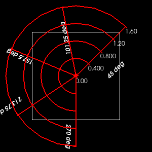
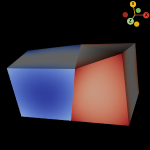
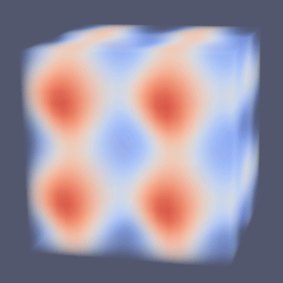
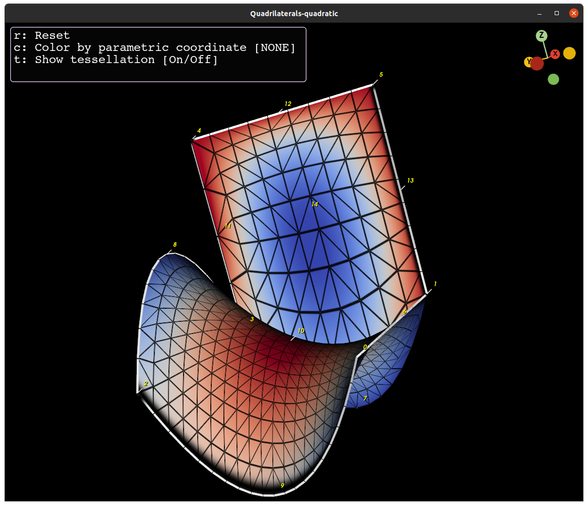

9.4#
Released on 2024-11-22.
VTK 9.4.1 Release Notes#
Changes made since VTK 9.3.1 include the following.
New Features#
Annotation#
💥 New
vtkPolarAxesActor2Davailable for drawing a polar axes overlay.
DataModel#
💥 New
vtkImplicitArraytemplate class brings memory efficiency to vtk data array applications. Author’s noteThe new
vtkAnnulusimplicit function represents an infinite annulus (two co-axial cylinders). Author’s note💥 VTK now supports higher order Galerkin cells via a new data object
vtkCellGrid. Author’s note
ExecutionModel#
New information keys added to allow filters to execute without any prior temporal access for in-situ visualization. Author’s note
Filters#
New
vtkAppendPartitionedDataSetCollectionclass to append multiple partitioned dataset collections into a single partitioned dataset collection. Author’s noteNew
vtkCriticalTimefilter to generate time step values based on user-specified threshold criteria. Author’s notevtkForceStaticMeshis a new filter that allows assigning varying dataset attributes on a static geometry. Author’s note💥 New filters
vtkForEachandvtkEndForallow logical pipeline execution over avtkExecutionRange. Author’s noteVTK now supports spatio-temporal harmonics data generation. Author’s note

vtkHyperTreeGriddataset is now supported by a broader range of filters:The
vtkRandomAttributegenerator now supports HTGs as input.The
vtkGenerateIdsfilter replaces thevtkIdFilterand now supportvtkHyperTreeGridin addition tovtkDataSet. ThevtkIdFilteris now deprecated.The dedicated
vtkHyperTreeGridGenerateProcessIdsfilter has been added to generate process IDs.The dedicated
vtkHyperTreeGridGenerateGlobalIdsfilter has been added to generate global IDs.
Feature edges detection is now supported for
vtkHyperTreeGriddatasets via the newvtkHyperTreeGridFeatureEdgesfilter.vtkHyperTreeGridProbeFilterobtained aUseImplicitArrayoption that makes the filter use indexed arrays to lower memory consumption, albeit with higher computational cost.New
vtkDataObjectMeshCacheallows storing and reusingvtkDataSetand subclasses. Author’s noteNew
vtkTemporalSmoothingFilteraverages input scalar values over a temporal window.Introduced
vtkBatchthat provides multithreading to improve vtkAlgorithm performance. Author’s noteA new
vtkGoldenBallSourcealgorithm has been added to create a solid tetrahedralized ball. Author’s note
Interaction#
The
vtkRenderWindowInteractor::InteractorManagesTheEventLoopflag can be used to integrate a VTK interactive application within an external event loop. Author’s notevtkBoxRepresentationhas a newSetCorners/GetCornersto control 3D coordinate bounds of thevtkBoxWidget.Using the option
RectangularShapeon thevtkFinitePlaneRepresentationfor thevtkFinitePlaneWidget, the widget stays rectangular when moving the two control points.The vtkCaptionRepresentation can now be sized using a configurable API
SetFit. The two options available to the user areVTK_FIT_TO_BORDERandVTK_FIT_TO_TEXT.The new
vtkImplicitConeWidgetrepresents an infinite cone parameterized by an axis, and angle between the sides of the cone and its axis, and an origin point.
I/O#
New
vtkBTSReaderfor reading Engys’ HELYX and ELEMENTS format data.Author’s noteNew
vtkERFReadercan be used to read ERF HDF5 files into a VTK application. Author’s noteNew
vtkFDSReaderfor reading data produced by Fire Dynamics Simulator. Author’s noteThe
vtkXdmfReadernow supports arbitrary polyhedra cell types. Author’s notevtkCGNSReaderis a new reader for CGNS files produced by the CONVERGE CFD (*.cgns).vtkHDFWriteris a new writer that supports most VTK datasets including temporal and composite data to the VTKHDF file format. Author’s noteThe new
vtkAlembicExporterexports the current view to the Alembic file format “.abc” file. Author’s noteThe
vtkFLUENTReaderis now also able to read FLUENT mesh files (*.msh).
Python#
💥 VTK now supports a more pythonic style object construction via property arguments. Author’s note
💥 The pythonic API support is also extended to connecting pipelines. Author’s note
In
dataset_adapter, CompositeDataset can now accessGlobalData, i.e. theFieldDataof its root.VTK now provides wheels using EGL for rendering available from the VTK Package Registry.
VTK now provides Python 3.13 wheels available from PyPI and the VTK Package Registry.
Added a new
AddUserPythonPathstatic method forvtkPythonInterpreterthat can be used to add user python paths.
Rendering#
💥 New ANARI rendering backend available via the
vtkRenderingANARImodule. Author’s noteVTK now loads the appropriate OpenGL library at runtime using
gladand no longer provides theVTK::openglmodule. Author’s noteNew ability to choose graphics backend preference for WebGPU via
SetBackendType.Author’s noteThe
vtkCellGridMappernow supports hardware selection to pick actors mappingvtkCellGriddatasets. The selection nodes provide additional properties like type of cell selected.💥 VTK now supports OpenGL tessellation shaders. Author’s note
VTK now renders
vtkCellGridinstances with upto quadratic geometry using dynamic distance-based tessellation shaders.
The new
vtkOpenGLLowMemoryPolyDataMapperis the default factory override forvtkPolyDataMapperwhenVTK_OPENGL_USE_GLES=ON.vtkArrayRendereris a new mapper to prototype OpenGL shader code usingvtkDataArraybound to texture buffers. Author’s noteA new alternative tone mapping method has been added to
vtkToneMappingPassbased on the reference implementation of Khronos PBR Neutral.💥 New compute shader API allows offloading work from the CPU to the GPU using webGPU compute shaders.
The new
vtkWebGPUComputeFrustumCullerculls actors to the camera frustum using webGPU compute shaders.The new
vtkWebGPUComputeOcclusionCulleruses the compute API for hierarchical two-pass occlusion culling. Author’s noteThe new
vtkWebGPUComputePointCloudMapperis a webGPU compute shader implementation based on the paper from Shütz et. al..💥 VTK now supports zSpace Inspire devices via the new
vtkZSpaceWin32RenderWindowandvtkZSpaceGenericRenderWindow.
Testing#
💥 New image testing framework using the Structural Similarity Index (SSIM). Author’s note
ThirdParty#
New
VTK::catalystmodule added to support Catalyst directly. Author’s note
VR#
VTK now supports a collaboration mode when rendering across multiple CAVE systems. Author’s note
VTK OpenXR module supports depth information to allow hologram stability on augmented reality devices like Microsoft Hololens 2.
VTK now supports basic rendering of controller models under OpenXR. Author’s note
WebAssembly#
💥 The new
vtkWebAssemblyOpenGLRenderWindowandvtkWebAssemblyRenderWindowInteractoruse Emscripten HTML5 API for event handling bringing in wasm64 and web-worker support.You can now enable 64-bit in VTK wasm build with the
VTK_WEBASSEMBLY_64_BITCMake option.You can now enable multithreading in VTK wasm build with the
VTK_WEBASSEMBLY_THREADSoption.The new
vtkRemoteInteractionAdaptermaps vtk-js interaction events to vtk in the form of a json-formatted string applied tovtkRenderer.
Wrapping#
VTK now auto generates (de)serialization code in C++ for classes annotated by the
VTK_MARSHALAUTOwrapping hint.The new
vtkObjectManagerclass allows applications to track the state of marshallable classes.
Changes#
Build#
ABI mangling using
inline namespacein VTK has matured with better guards and a CI build to catch issues. :warning: BREAKING_CHANGES Author’s note‼️ Some function-like macros now require trailing semi-colons. Author’s note
vtkThreadedTaskQueueandvtkThreadedCallbackQueuehave been moved from the Parallel/Core module to the Common/Core module to stay consistent with other SMP related tools.
The
_vtk_module_depfile_argsinternal command is now available to computeadd_custom_command(DEPFILE)arguments based on the CMake version and generator.
The
_vtk_module_add_file_setinternal API has been added to add file sets to targets in a CMake-version portable way.The
vtk_module_buildAPI has learned a newUSE_FILE_SETSAPI to control the usage of file sets for projects that are not yet ready to use them.The
vtk_module_linkCMake module API learned theNO_KIT_EXPORT_IF_SHAREDargument to prevent exporting of mentions of imported targets coming from avtk_module_find_package(PRIVATE_IF_SHARED)call.The
vtk_object_factory_configureCMake API now supports anINITIAL_CODE_FILEargument to avoid having to get arbitrary source through CMake’s argument parser.vtkVersionQuickheader now has a newVTK_EPOCH_VERSIONmacro defined as the actualVTK_BUILD_VERSIONvalue for release-track development.
DataModel#
Some of the
vtkDataSetsubclasses now make use ofvtkStructuredPoints,vtkStructuredCellsto improve vtk performance. Author’s noteYou can now force a value type for the
ValueRangeof a generic data array and access the pointer viaValueRange::data(). This allows dynamic type casting for unknownvtkDataArraytypes.vtkDataArraytuple access can now allows for 64-bit integer data viaSetIntegerTuple/GetIntegerTuple. Author’s notevtkCellArraydefault storage type is now configurable at runtime viaSetDefaultStorageIs64Bit().
Filters#
The
vtkHyperTreeGridThresholdnow exposes aSetMemoryStrategymethod for choosing the structure of its output in memory. Author’s noteMore
vtkAbstractTransformsubclasses ported to usevtkSMPToolsacceleration. Author’s noteYou can now use the input array magnitude values for thresholding data with
vtkThresholdby setting the component mode -SetComponentModeToUseSelected.The
vtkDecimatePolylineFilterhas been refactored to use a strategy pattern for decimation. Author’s note
I/O#
vtkHDFReadernow supports composite datasets likevtkPartitionedDataSetCollection,vtkMultiBlockDataSetand temporal overlappingAMR based on user specified parameters.The
vtkHDFReaderandvtkIOSSReadergained a new caching parameter to enable/disable caching temporal data from time-series datasets.vtkFidesReaderhas a newCreateSharedPointsparameter to create shared points at the interface between blocks of uniform grids. It can also choose which arrays to load.The
vtkFLUENTReaderintroduced loading zones from the FLUENT .msh files. :warning: BREAKING_CHANGES Author’s notevtkXMLWriterBasesubclasses can now choose to writeTimeValuefield data withSetWriteTimeValues().vtkCityGMLReader::SetFieldmethods allow setting texture paths or material colors for polydata in a multiblock dataset.The
vtkADIOS2VTXReaderhas improved error reporting and build changes. Author’s noteAdded support for AMReX-based simulation codes to pass data to ParaView Catalyst. Author’s note
vtkCesium3DTilesReaderhas been extended support additional features. :warning: BREAKING_CHANGES Author’s notevtkGLTFExporternow has a configurable API for whether to export NaN color or not.
Rendering#
vtkOpenGLPolyDataMapper2Dnow supports custom uniforms set using thevtkShaderPropertyfor avtkActor2D.One can now specify
vtkImageDatageometry (origin, spacing, axis directions) from a 4x4 matrix using the newApplyIndexToPhysicalMatrixandApplyPhysicalToIndexMatrixmethods.vtkWebAssemblyRenderWindowInteractorandvtkSDL2OpenGLRenderWindowclasses now support hi-dpi screens.The
vtkUnstructuredGridGeometryFilter::MatchBoundariesIgnoringCellOrderoption allows disabling interior faces of different order cells in polyhedral meshes. Author’s notevtkWebGPURenderWindowsupports switching power preference viaPreferHighPerformanceAdapter()/PreferLowPowerAdapter().vtkXWebGPURenderWindowis now the default factory override forvtkRenderWindowwhen using the experimental WebGPU backend on Linux desktops.vtkShaderProgramnow supports OpenGL compute shaders.SDL2 has been disabled by default and new WebAssembly classes are recommended. Author’s note
vtkExtractSelectioncan now skip hidden points/cells using theTestGhostArraysoption. It has also been fixed to work forvtkUniformGridAMRsubclasses.vtkScalarBarActornow supports avtkPiecewiseFunctionas a scalar opacity function in addition to the color lookup table.vtkOpenGLRenderWindownow allows to blit the depth buffer as well as set the depth buffer bit size of render buffers for working in external OpenGL context environments.
Wrapping#
VTK’s wrapping tools now support depfile output via the
-MFflag.vtkWrap_WarnEmptyis now available to warn when empty bindings are generated.
Fixes/improvements#
Accelerators#
Changed the VTK to VTK-m array conversion routines. Author’s note
Annotation#
vtkAxisActor2D’s tick and label positioning has been improved.
Build#
Optional dependencies now have better logic for detecting the usability of external optional dependencies.
Building packages against static VTK libraries with the MSVC compiler no longer fails due to a missing symbol for
vtkSMPToolsImpl::IsParallelScope.
Charts#
vtkChartLegendcan now specify the anchor point in normalized point coordinates to preserve across chart resizes.
Core#
New
vtkSMPTools::GetEstimatedDefaultNumberOfThreadsavailable to introspect the default number of threads that SMP tasks will use.vtkStringTokenhas been moved to a third-party library (ThirdParty/token). Author’s note
DataModel#
vtkConenow exposes getters and setters for its axis and origin parameters.Fixed normal computation in the
vtkCell::GetFacemethod for 3D cells.vtkCelltriangulation api was refactored to improve performance and reduce code redundancy. Author’s notevtkPolygontriangulation implementation has been improved. Author’s noteMultiple improvements to VTK’s polyhedral cell storage. Author’s note
Fix cell-grid initialization crashing on static debug Windows builds. Author’s note
Filters#
vtkUnstructuredGrid::InsertFaceis improved slightly by avoiding duplicate point searches.The
vtkConduitSourcehas been updated to usevtkDataObjectAPI and it has been improved to output field data at the leaf level of thevtkPartitionedDataSet.Fixed
vtkMergeArraysfor temporal data.Improved the
vtkOrientPolyDataseed face cell selection algorithm.vtkReflectionFiltersupports theVTK_PIXELcell type.Fixed scaling error in
vtkWindowdSincPolyDataFilter. Author’s notevtkGhostCellsGeneratorcan now generate points/cells global and process ids.vtkIntegrateAttributeshas been multithreaded using vtkSMPTools.vtkRedistributeDataSetFilterwas refactored for better modularity. :warning: BREAKING_CHANGES Author’s noteOptimized
vtkUnstructuredGridGeometryFilterfor higher order as well as degenerate cells. Author’s noteRefactored
vtkPolyDataNormalsfor better code concurrency. Author’s notevtkDataSetSurfaceFilternow supports non-linear cells for the subdivision algorithm.
I/O#
vtkDelimitedTextReaderhas a much lower memory consumption overhead and gained performance improvements. Author’s notevtkEnsightGoldCombinedReaderandvtkEnsightSOSGoldReaderhave been rewritten for better overall functionality. Author’s noteThe
vtkFDSReadernow correctly supports reading slice & boundaries files (.sf & .bf), for both point and cell-centered data.vtkIOSSReaderhas been fixed for 21-node wedge and 18-node pyramid cells. It has also been refactored for performance improvements and code readability.
Interaction#
Multiple improvements have been made to the multi-touch event based gesture handling in VTK. :warning: BREAKING_CHANGES Author’s note
Fixed Cocoa (macOS) incorrect KeySym. Author’s note
Python#
Better support for single char parameters in vtk functions via python. Author’s note
Improved python concurrency via wrapper hints. Author’s note
Logic to enable module import at vtk module load time. Author’s note
Rendering#
vtkShadowMapBakerPassexposes setters and getters forExponentialConstantused in the exponential shadow maps algorithm for shadow rendering.Fixed rendering lines as tubes without lighting with the
vtkOpenGLPolyDataMapper.Scalar coloring has been fixed for the
vtkCompositePolyDataMapper.Ensure that the
vtkHardwarePickerreturns the ID from the closest node.Fixed blending issues with the
vtkOrderIndependentTranslucentPass.vtkLegendScaleActorimprovements. Author’s noteOn Linux (and any platform that uses GLX for OpenGL), VTK will now ask for
GLX_CONTEXT_PROFILE_MASK_ARBandGLX_CONTEXT_CORE_PROFILE_BIT_ARBwhen creating a rendering context.Infinite floor plane support in VTK via
vtkSkybox. Author’s noteFix deserialization bug in vtkCollection. Author’s note
Fixed backface color in glyph 3D mapper. Author’s note
Fixed X error about maximum clients reached. Author’s note
Fixed bug with removing and adding vtkOrientationMarkerWidget. Author’s note
System#
vtkSocketcan now bind to any user-specified address to restrict interfaces thevtkServerSocketcan be accessed from.
VR#
Improved head-mounted display tracking in
vtkVRRenderWindow. Author’s noteAdd explicit support for PHYSICAL and WORLD coordinate systems via the 4x4 matrix -
PhysicalToWorldMatrix.
Deprecations/Removals#
Python 3.6 and 3.7 are end-of-life. VTK 9.4 dropped official support for it from CI and wheel builds.
The following APIs were deprecated in 9.2 or earlier and are now removed:
vtkObjectBase’sRegisteris no longer virtual. To control register counting/garbage collecting behavior overridevtkObjectBase::UsesGarbageCollectorinstead. The following classes have been changed to meet this requirement:vtkInformationKeyvtkGarbageCollectorImpl
vtkOpenFOAMReader::SetDecomposePolyhedrahas been removed.vtkCriticalSectionhas been removed (usestd::mutexinstead).vtkHierarchicalBoxDataIteratorclass removed. UsevtkUniformGridAMRDataIteratorinstead.vtkHyperTreeCursorclass removed. Use other Hyper Tree Grid cursors instead.The following classes have been removed in favor of
vtkExtractSelection:vtkExtractSelectedBlockvtkExtractSelectedIdsvtkExtractSelectedLocationsvtkExtractSelectedPolyDataIdsvtkExtractSelectedThresholds
vtkCompositeInterpolatedVelocityFieldreplaces the following classes:vtkCachingInterpolatedVelocityFieldvtkCellLocatorInterpolatedVelocityFieldvtkInterpolatedVelocityField
vtkAbstractCellLocatorhas the following members removed for thread safety:SetLazyEvaluationGetLazyEvaluationLazyEvaluationOnLazyEvaluationOff
vtkCellLocator::BuildLocatorIfNeededremoved because LazyEvaluation has been deprecated.vtkCellTree::BuildLocatorIfNeededremoved because LazyEvaluation has been deprecated.vtkInteractorEventRecorder::ReadEvent()has been moved toReadEvent(const std::string&).vtkHyperTreeGrid::GetNumberOfVerticesdeprecated in favor ofGetNumberOfCells().vtkVRCamera’sGetTrackingToDCMatrixremoved. UseGetPhysicalToProjectionMatrixinstead.vtkTemporalInterpolatedVelocityFieldSetDataSetAtTimeremoved, useSetMeshOverTimeinstead.IsStaticremoved, useGetMeshOverTimeinstead.
vtkParticleTracerBaseSetStaticMeshremoved, useSetMeshOverTimeinstead.GetStaticMeshremoved, useGetMeshOverTimeinstead.
vtkTableFFT’sPrefixOutputArrayshas been deprecated in favor of always keeping the output array names the same as the input.vtkGeometryFilter’sSetDegree,GetDegreeMinValue,GetDegreeMaxValue,GetDegree,SetLocator,GetLocator, andCreateDefaultLocatorhave been removed.vtkCellTypeslocation information has been removed:SetCellTypes(vtkIdType ncells, vtkUnsignedCharArray* cellTypes, vtkIdTypeArray* cellLocations)use versionSetCellTypeswithoutcellLocationsinstead.GetCellLocationremoved.
vtkStaticCellLocatorno longer usesTolerancewhich has deprecated theUseDiagonalLengthToleranceflag.vtkDescriptiveStatistics’sUnbiasedVariance,G1Skewness, andG2Kurtosisparameters have been removed. UseSampleEstimateinstead.vtkBorderRepresentation::SetBWActorDisplayOverlayis deprecated. Use SetBWActorDisplayOverlayEdgesorSetBWActorDisplayOverlayPolygoninstead.vtkOSPRayRendererNode’sVolumeAnisotropyparameter has been removed.vtkMeshQualityhas removed the following flags:VolumeCompatibilityMode
Removed
_InteractionStatetypedef from the following classes:vtkQWidgetRepresentationvtkAffineRepresentationvtkBalloonRepresentationvtkBorderRepresentationvtkButtonRepresentationvtkCompassRepresentationvtkContinuousValueWidgetRepresentationvtkCoordinateFrameRepresentationvtkCurveRepresentationvtkDisplaySizedImplicitPlaneRepresentationvtkFinitePlaneRepresentationvtkHandleRepresentationvtkImplicitCylinderRepresentationvtkImplicitPlaneRepresentationvtkMagnifierRepresentationvtkParallelopipedRepresentationvtkPointCloudRepresentationvtkRectilinearWipeRepresentationvtkSliderRepresentationvtkVRPanelRepresentation
Removed
_WidgetStatetypedef from the following classes:vtkQWidgetWidgetvtkAffineWidgetvtkAxesTransformWidgetvtkBorderWidgetvtkBoxWidget2vtkButtonWidgetvtkCameraPathWidgetvtkCenteredSliderWidgetvtkCompassWidgetvtkContinuousValueWidgetvtkCoordinateFrameWidgetvtkDisplaySizedImplicitPlaneWidgetvtkFinitePlaneWidgetvtkHandleWidgetvtkImplicitCylinderWidgetvtkImplicitPlaneWidget2vtkLineWidget2vtkMagnifierWidgetvtkPointCloudWidgetvtkPolyLineWidgetvtkRectilinearWipeWidgetvtkResliceCursorWidgetvtkSliderWidgetvtkSphereWidget2vtkSplineWidget2vtkTensorWidgetvtkVRMenuWidgetvtkVRPanelWidget
Removed
_HighlightStatetypedef fromvtkButtonRepresentation.Removed
_Picking_Modetypedef fromvtkPointCloudRepresentation.Removed
_SliderShapetypedef fromvtkSliderRepresentation3D.vtkChemistryConfigure.hhas been removed.vtkMFCConfigure.hhas been removed.